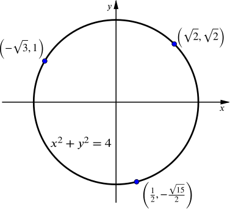
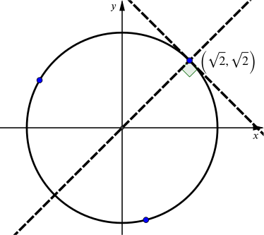
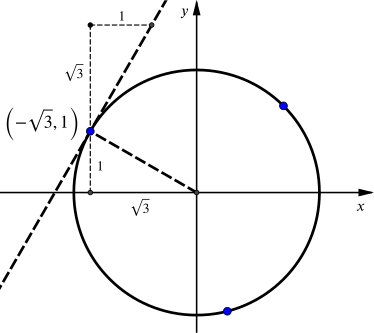
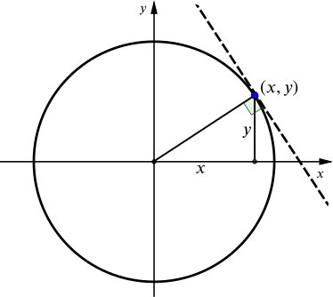

Find the gradient of the curve x2+y2=4 at the following three points.

There are different ways we could think about finding the gradient of a circle at a point.
The gradient of the curve is the same as the gradient of the tangent at that point, and we know that the tangent to a circle is perpendicular to the radius. The radius through (2⎯⎯√,2⎯⎯√) is part of the line y=x. So the tangent is the line y=−x+c. We don’t need to find c as we just want the gradient, which is −1.

We don’t need to find the equations of the radius and tangent, we can just think about their gradients. At the point (−3⎯⎯√,1) the gradients are
mradius=1−3⎯⎯√ and mtangent=3⎯⎯√1.

We could differentiate the equation of our curve to find the gradient at x=12.
The difficulty is that we do not have an equation in the form y=f(x). Can we rearrange it?
x2+y2y2y=4=4−x2=±4−x2⎯⎯⎯⎯⎯⎯⎯⎯⎯⎯√
This final line causes problems as there are two options for the square root. How might we proceed from here?
Given that we have a specific point, (12,−15√2), we know we want the negative square root as our value of y is negative. Therefore we could differentiate y=−4−x2⎯⎯⎯⎯⎯⎯⎯⎯⎯⎯√ using the chain rule to get
dydx=−12(4−x2)−1/2⋅(−2x)=x4−x2⎯⎯⎯⎯⎯⎯⎯⎯⎯⎯√.
At x=12 this gives us a gradient of 115√.
Notice that our expression for dydx is undefined for x=±2 and for ||x||>2. But here we are only interested in x=12.
What is the derivative at a general point on the curve?
Again, we can tackle this in a number of different ways.
We see that the gradient of the radius at (x,y) is yx.

As the tangent is perpendicular to the radius, the gradient of the curve at that point will be −1y/x or −xy.
Would it matter if our point was in a different quadrant?
If we rearrange the equation, we get y=±4−x2⎯⎯⎯⎯⎯⎯⎯⎯⎯⎯√ as above. The two cases make this slightly awkward, but we can treat them separately.
If y=+4−x2⎯⎯⎯⎯⎯⎯⎯⎯⎯⎯√ then using the chain rule we have
dydx=124−x2⎯⎯⎯⎯⎯⎯⎯⎯⎯⎯√(−2x)=12(−2x)y=−xy.
Whereas, if y=−4−x2⎯⎯⎯⎯⎯⎯⎯⎯⎯⎯√ we have
dydx=−124−x2⎯⎯⎯⎯⎯⎯⎯⎯⎯⎯√(−2x)=12(−2x)y=−xy.
So for each case we get the same result as above.
Notice that something strange happens in between the two cases, at y=0.
What happens if instead we differentiate the original equation x2+y2=4 directly?
Differentiating both sides we get
ddx(x2+y2)=ddx(4)
which is the same as
ddx(x2)+ddx(y2)=ddx(4)
and therefore
2x+ddx(y2)=0.
This in itself is not very helpful, but if we define u=y2 we can then use the chain rule.
ddx(y2)=dudx=dudy⋅dydx=2ydydx
This is useful because now we have an expression involving the gradient of the curve.
This works because, even though we could not write y as a function of x, if you look at just the part of the curve near a given point, y and uare functions of x and the gradients do have sensible meanings.
What we have done is called implicit differentiation and means that when we differentiate x2+y2=4 we get
2x+2ydydx=0.
We can now rearrange to find dydx=−xy, the same as we had from the other approaches.
You might notice that the gradient function is in terms of both x and y. This makes sense because for each value of x, there may be two points on the curve, each of which has a different y and different gradient.
You might check this result by substituting the coordinates given earlier to make sure we get the same gradients.
What happens when y=0? What does this mean geometrically on the circle?
In this case, we had a choice of three methods, but for many other curves the first two approaches do not work and implicit differentiation becomes a valuable tool.
What is the derivative at a general point on this curve?
Can you use the same methods as above?
The first approach above relied on the geometry of the circle. It used the fact that a tangent to a circle is at right-angles to the radius. Is this true for an ellipse? Imagine your ellipse as a circle that has been stretched in one direction. What happens to the angle between the tangent and the radius?